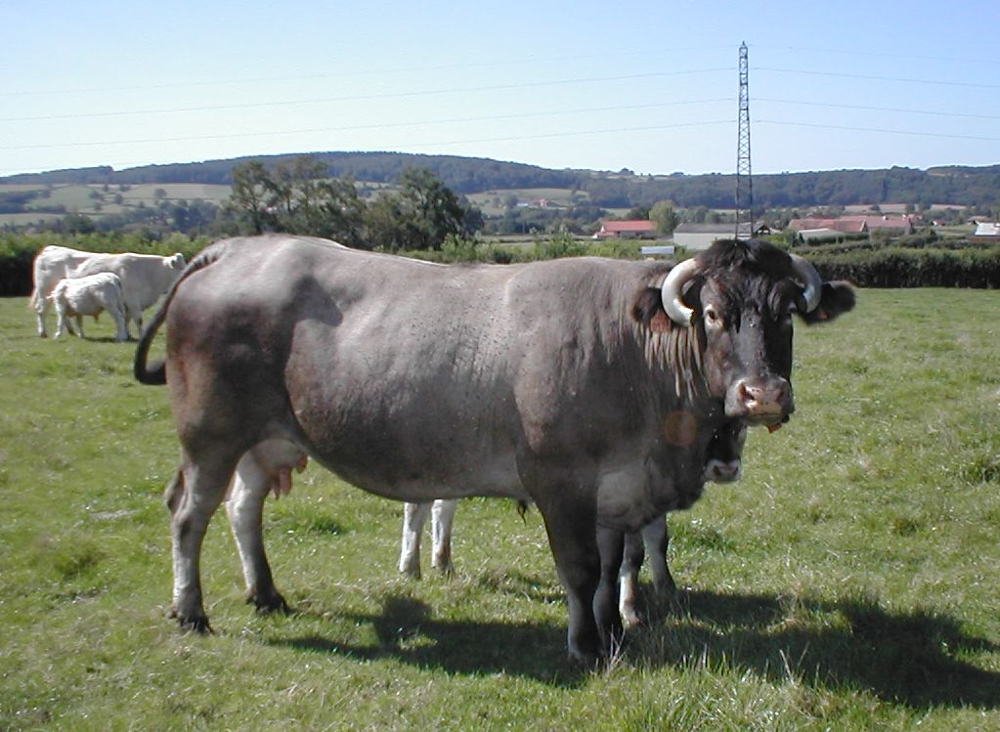

BAZADAISE
Weight:
1320 to 1760 pounds
Height :
50 inch
51 inch
Length:
71 inch
87 inch
Color:
coat color that is predominantly a shade of red or mahogany
Longevity:
10 – 15 years.
Bazadaise personality
The Bazadaise cow breed is known for its calm and docile temperament, making them relatively easy to handle and manage. They typically have a gentle disposition, which can be advantageous for farmers during handling, milking, or other management tasks. This calm demeanor also makes them suitable for various farming systems, including extensive grazing and pasture-based management.
Additionally, Bazadaise cows are known for their adaptability to different environmental conditions. Originating from the Bazadais region of France, which features sandy soil and a maritime climate, these cows have developed resilience to a range of weather conditions and terrain types.
What to expect
1.Dual-purpose: The Bazadaise is a dual-purpose breed, meaning it is suitable for both meat and milk production. While it's primarily raised for beef, it can also provide a moderate amount of milk.
2.Meat quality: Bazadaise cattle are highly valued for their meat quality. The beef they produce is known for its excellent flavor, tenderness, and marbling, making it desirable in both local and international markets.
3.Hardiness: This breed is well-adapted to various environmental conditions. They have a robust constitution and can thrive in different climates, including regions with harsh weather conditions.
4.Temperament: Bazadaise cattle are generally known for their calm and docile temperament. This makes them easier to handle and manage, which is beneficial for both farmers and handlers.
5.Growth rate: Bazadaise cattle typically exhibit good growth rates, allowing them to reach market weights relatively quickly compared to some other beef breeds. This characteristic contributes to their economic value for meat production.
History of the Alentejana
Early Origins: The exact origins of the Bazadaise breed are not entirely clear, but it is believed to have developed from local cattle populations in the Bazadais region during the Middle Ages. These cattle were primarily raised for their meat and were well-adapted to the rugged terrain and climate of the area.
Selective Breeding: Over time, farmers in the Bazadais region began selectively breeding their cattle for specific traits, such as meat quality, hardiness, and adaptability to local conditions. This selective breeding process led to the development of the Bazadaise as a distinct breed with its own unique characteristics.
Role in Agriculture: The Bazadaise breed played an essential role in the agricultural economy of the region, providing meat and other products to local communities. Their ability to thrive in the rugged and often harsh conditions of southwestern France made them valuable assets to farmers and ranchers.
Recognition: The Bazadaise breed gained recognition for its excellent meat quality and adaptability, leading to its spread beyond the Bazadais region. In the late 19th and early 20th centuries, efforts were made to standardize the breed's characteristics and promote its use in beef production.